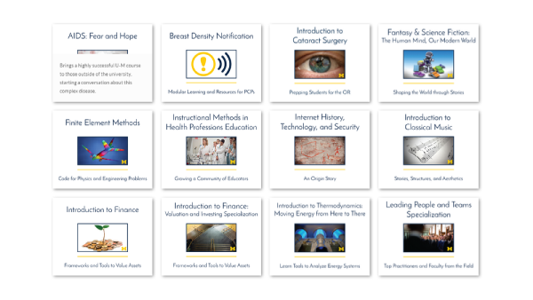

Through faculty-led experiments developed in partnership with DEI we continue to explore digital learning tools to best deliver education on campus and beyond. Our approach is scholarly, practical, and platform agnostic.
At Michigan, there are two fundamental questions that drive our experimentation with MOOCs:
- How can experiments with MOOCs help us redefine public residential education at a 21st century research university and unlock personalized, engaged, and lifelong learning?
- What is it that is only possible at a great public residential research university?
U-M is a leader in digital learning and learning analytics and continues to pioneer new experiments in the MOOC space. We’ve reached 3.4M lifelong learners since becoming one of Coursera’s first four partners in 2012. We continue to see great value from our experimentation with MOOCs. Faculty innovators are challenging assumptions around teaching and learning to explore the potential of truly differentiated educational experiences, that the University of Michigan is uniquely positioned to provide its students as well as learners around the world.

We have moved beyond the initial wave of experimentation with MOOCs. We are increasing our investment and focus on the potential for research and analytics and have played an important role influencing and catalyzing collaborative massive MOOC research. We are adapting MOOCs for use on campus with examples such as US Healthcare Policy, Finance, and Model Thinking. This month we launched 4 new specializations on the Coursera platform: Leading People and Teams, Introduction to Finance: Investing and Valuation, Introduction to Python, and Web Design for Everybody. We are working with faculty innovators to develop interdisciplinary MOOCs.We are exploring interesting questions about video production and engagement, blended learning, crowd-editing, modularity, learning analytics, copyright, peer to peer learning, remix and reuse, and more.
More sophisticated and varied experimentation requires continually exploring ways to expand our sandbox. As we deepen our strategic partnership with Coursera and begin to explore a new partnership with NovoEd, our Digital Innovation Advisory Group asked that we explore other market leading platforms like edX. In response to this faculty advice, DEI and DIAG will host the CEO of edX next week for a public talk about edX and trends in digital learning. Anant Agarwal will be the featured speaker at a session from 4-6pm, September 22, at the Hatcher Graduate Library Gallery.
This talk marks the first event of the new Academic Innovation at Michigan series (AIM) powered by DEI. With the launch of AIM, we are excited to bring innovators to campus to engage in thoughtful and collaborative discussion about the future of higher education. We are excited about the year to come and to continue enabling faculty-led innovation aimed to shape the future of learning and unlock personalized, engaged, and lifelong learning for the U-M community and learners around the world.